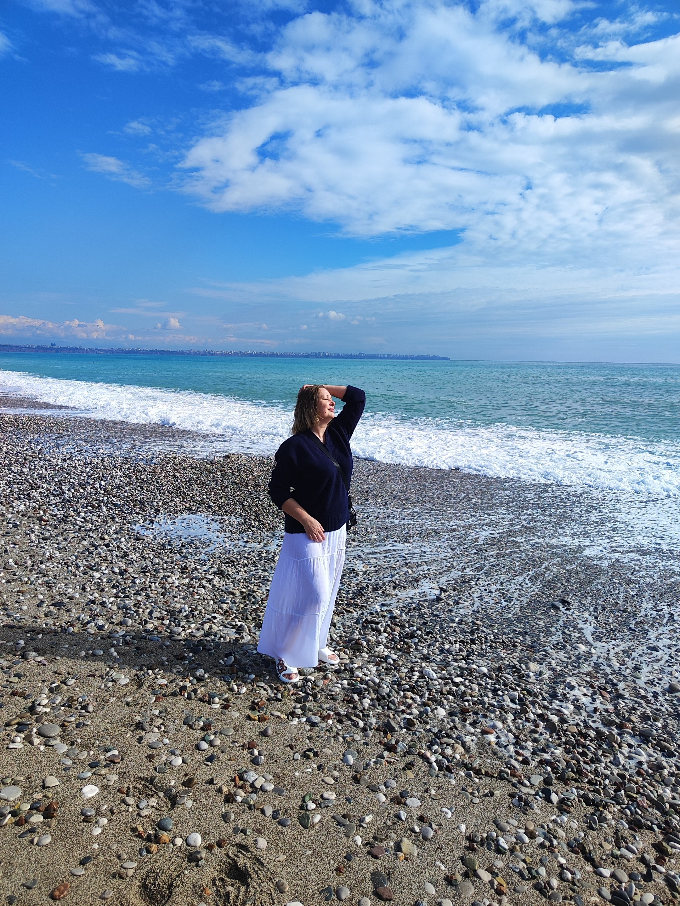
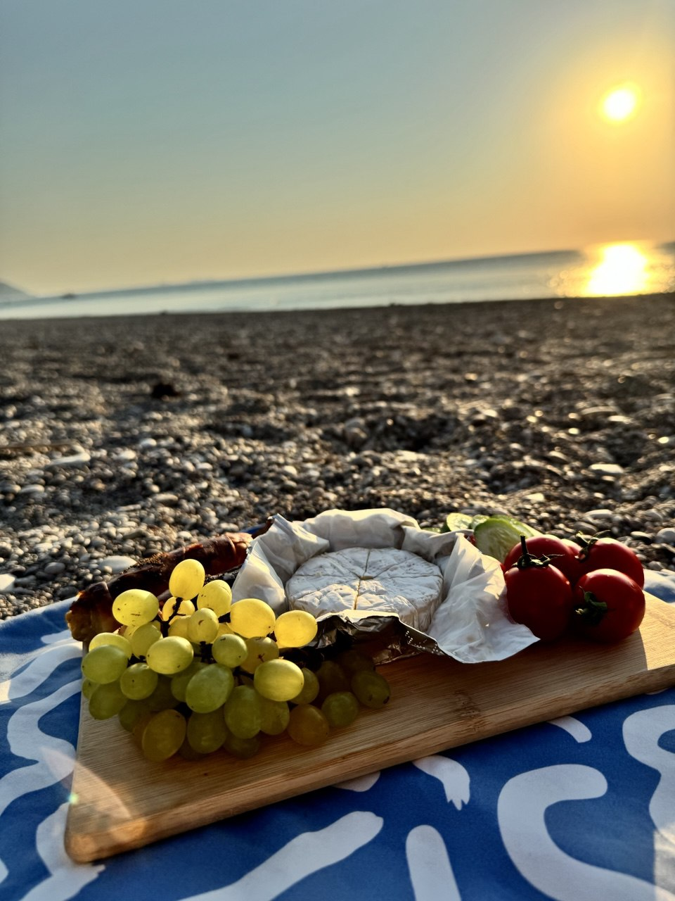
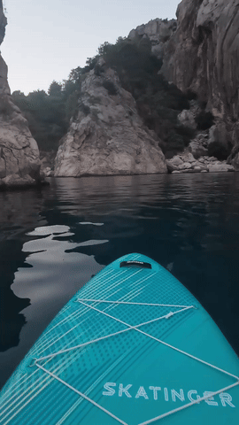
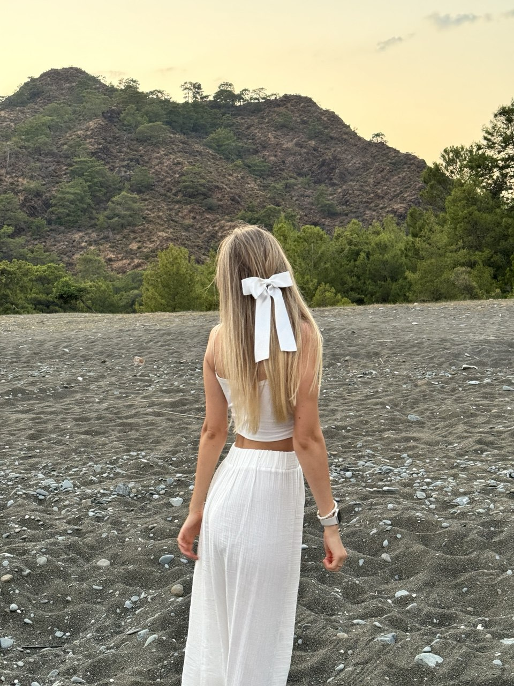
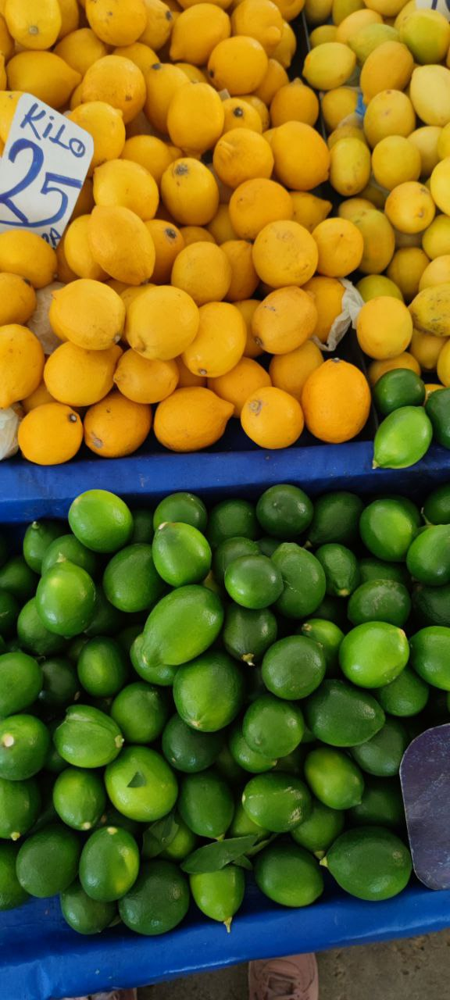
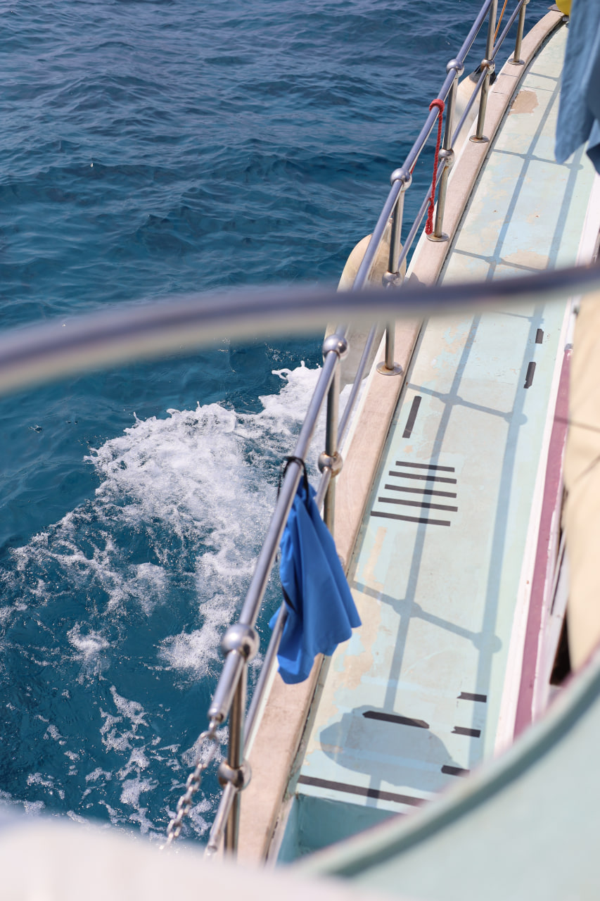
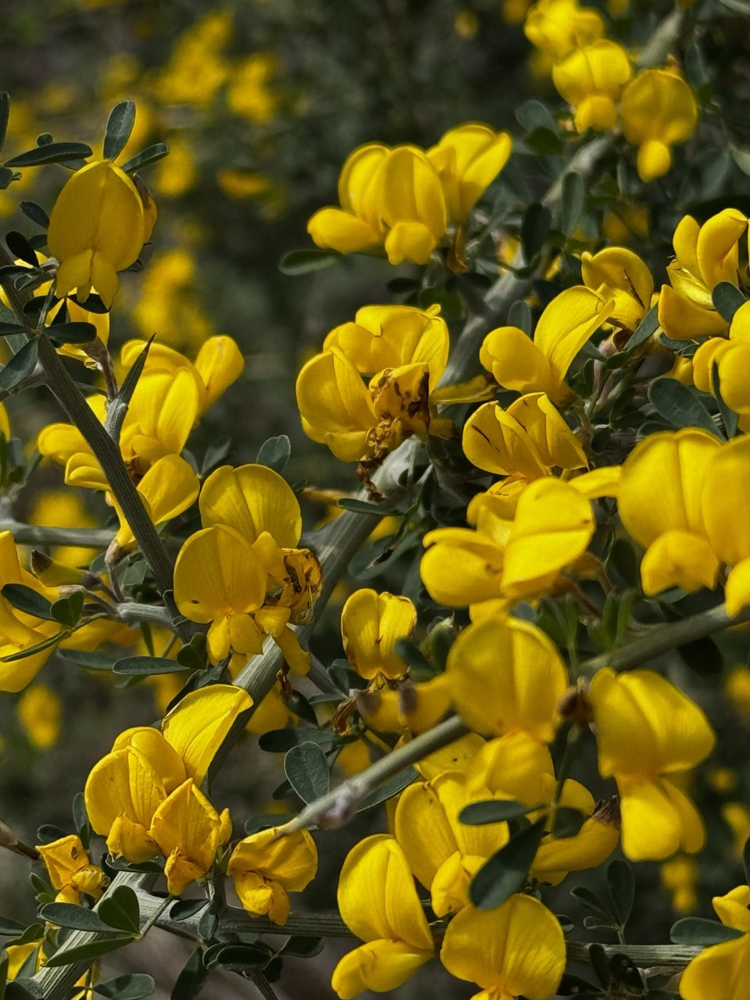
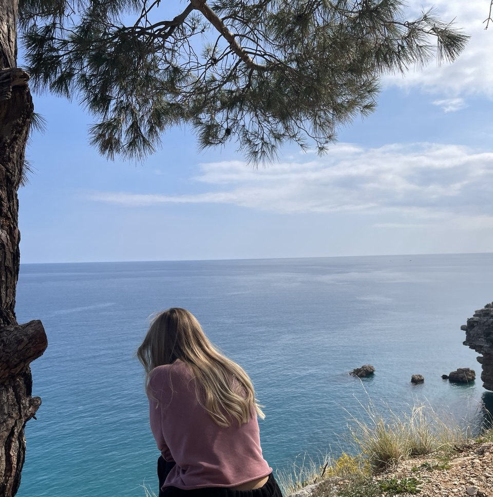
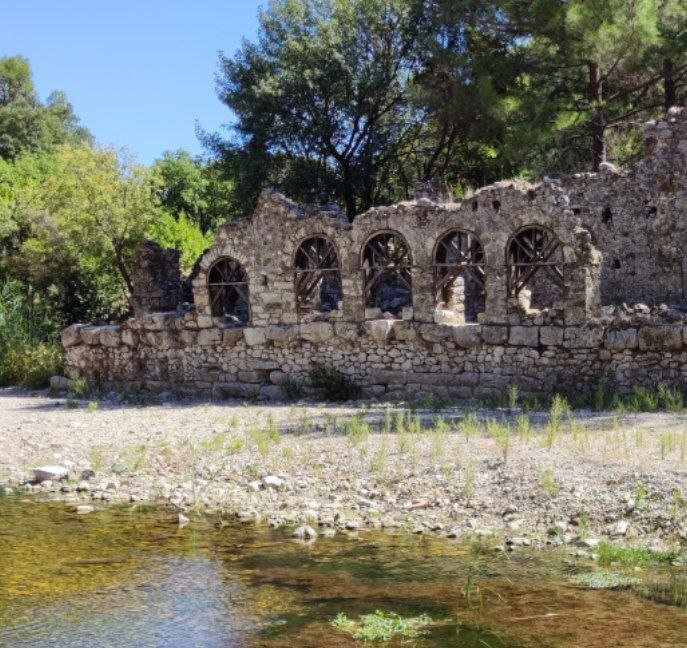

МОЙ РЕСУРС женский ретрит - активация через архетипы
ретрит на природе / 6-дневное погружение в Турции на берегу моря
тело / эмоции / архетипы / ресурсы
Ведущая - Ольга Дордже - клинический психолог, гипнолог, телесный терапевт, остеопрактик, культуролог, художник.
Концепция
Каждый день – работа с ключевым архетипом, который открывает доступ к скрытым ресурсам.
Этот ретрит — для женщин, которые чувствуют: пора раскрыть свою внутреннюю силу и надеть сияющую Корону Богини.
Когда хочется настоящего возвращения к себе, к своим мощным внутренним ресурсам.
Мы встречаемся у моря, чтобы пройти путь активации архетипов: от Дикой Женщины к Богине.
Каждый день будет посвящён одной силе, одному образу, одной грани души.
Через тело, движение, танец, театр и символы мы будем находить то, что питает и поддерживает изнутри.
МОЙ РЕСУРС: активация через архетипы - это:
🌿 6 дней в райском месте на берегу моря
🔥 Погружение в архетипы через тело, движение, театр и символы
🌙 Пространство женской силы, поддержки и бережности
✨ Трансформация привычных ролей в источник ресурса
🕊 Свобода и проявленность через танец и творчество
🌸 Торжественная церемония принятия своей целостности и сияния
Для кого этот ретрит
Если откликается хотя бы один пункт — вам сюда:
🌿 Что вас ждёт?
Погружение в архетипы Дикой Женщины, Шаманки, Дитя, Амазонки, Волшебницы и Богини
- • Телесные практики и танцевальная терапия для активации внутренних ресурсов
- • Психологический театр и работа с масками для раскрытия многогранности себя
- • Символические ритуалы и медитации для гармонизации тела, эмоций и духа
- • Свобода движения, самовыражения и спонтанного творчества
- • Групповая поддержка и обмен энергией в безопасном женском пространстве
- • Торжественное принятие своей целостности и внутреннего сияния
Программа по дням
- Практика «Звериная грация»
- Танцевальная терапия: «Танец тени»
- Ритуал «Вхождение в первозданную суть»
- Медитация «Разговор с древним собой»
- Театр архетипов: Импровизация «Совет мудрецов»
- Практика «Карта ресурсов»
- Гадание «Что мне нужно знать сейчас?»
- Игра «Выход из шаблонов»
- Танцевальная терапия: «Танец детства»
- Практика «Терапия принятия»
- Практика «Щит: мои границы»
- Практика «Мой ресурсный меч»
- Театр теней: «Битва с драконом»
- Ритуал «Трофеи»
- Дыхательная практика «Переплавка»
- Театр масок: «Многогранное Я»
- Практика «Эликсир», создаём свой рецепт ресурсного состояния
- Церемония «Новые чары», заряжаем амулеты
- Танец-благодарность телу
- Практика «Ресурсный круг» групповая энергия
- Театр: «Корона Богини»
- Торжественная церемония принятия своей божественной природы
Стоимость участия
- Ежедневные телесные, творческие и театральные практики
- Символические ритуалы и медитации
- Групповая поддержка и сопровождение
- Подготовительный гайд и чат участниц
Проживание вдвоём в бунгало
7 ночей, с 19 по 26 октября
Оплата жилья производится наличными в долларах на месте
- Плейлист практик и медитаций
- Рекомендации по подготовке тела
- Список вещей и чек‑лист
Трансфер
Что не включено в программу
Проживание в Чиралы
Мы живём в уютных бунгало посреди зелёного сада. Утро начинается со свежих турецких завтраков на природе, днём каждого ждут бесплатные ароматные чаи. До моря — несколько минут пешком: впереди длинная береговая линия и кристально чистое бирюзовое море — именно то место, где легко выдохнуть и почувствовать опору.
- • Уютные бунгало в тени сада
- • Свежие турецкие завтраки на природе
- • Чаи — бесплатно весь день
- • Длинная береговая линия
- • Бирюзовое, кристально чистое море
- • Пространство для тишины и прогулок
- • Античный Олимпос
- • Огни Химеры (вечерний выезд)
- • Участок Ликийской тропы
Чиралы — это покой и умиротворение: деревушка, которую любят те, кто устал от суеты и шумных курортов. Здесь легко замедлиться, надышаться ароматом моря и зелени, почувствовать поддержку природы — идеальные условия для мягкой внутренней работы.
- 
- 
- 
- 
- 
- 
-

- 
- 
- 
Бронирование и вопросы
✨ Напишите, и мы ответим на любые вопросы: программа, проживание, логистика и оплата.

👐 Я рядом
Меня зовут Ольга Дордже. Я психолог, гипнолог, телесный терапевт и проводник внутренних путешествий.
Я верю, что раскрытие вашей силы может быть мягким и вдохновляющим.
Лёгким, как утренний ветер у моря.
Изящным, как танец света на воде.
Полным открытий и внутреннего сияния.
Если вы ощущаете внутренний зов — напишите, я поделюсь всеми деталями.
✨ Присоединяйтесь к нам, чтобы прожить свои архетипы, открыть скрытые ресурсы, отпустить всё, что мешает, и наполниться энергией женской силы! Позвольте себе сиять, двигаться, творить и обрести гармонию в волшебном пространстве ретрита!